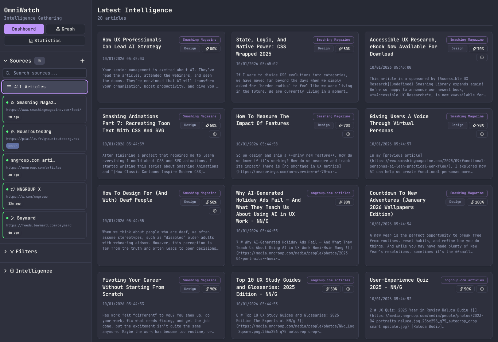

Assistant d'investigation forensic local-first
Julien Welschinger-Hueber — Certification CDUI 2025-2026
LUCID c'est quoi ?
Un assistant d'investigation forensic qui analyse automatiquement vos conversations pour détecter, extraire et structurer les preuves de violences ou de harcèlement.
Détection intelligente
IA locale analyse vos messages
Chronologie claire
Timeline visuelle des événements
100% Privé
Tout reste sur votre machine
→ Prouver sans revivre
Genèse du projet
"Ce projet est né pour aider une personne proche
qui a décidé de briser le silence."
Porter plainte, c'est aussi devoir chercher des preuves,
mettre des dates sur des événements,
retrouver des sujets vagues dans des années de messages.
Le problème
Mot manquant
Résultat
Scrolling infini
Des milliers de messages
Nuits blanches
Épuisement mental
Victimisation secondaire
Revivre le trauma à chaque lecture
"Je voulais créer l'outil
que j'aurais aimé avoir."
L'évolution technique
V0.1
Recherche
flexible
V0.3
RAG & Recherche
sémantique
V1.0
Graph RAG
(MVP)
D'un outil personnel à une solution complète d'investigation
V0.1 — Recherche flexible
Le premier pas
Le besoin
Trouver un message sans connaître les mots exacts
Recherche par approximation, par ressemblance
La solution
Flexibilité et tolérance
Recherche plus souple que l'orthographe stricte
V0.3 — RAG & Recherche sémantique
La preuve de concept
Le besoin
Poser des questions en langage naturel
"Quand est-ce qu'il m'a menacée pour la première fois ?"
La solution
Embeddings + recherche vectorielle
Interroger une IA avec le contexte des messages
V1.0 — Graph RAG
Le vrai MVP — Migration en cours
Le besoin
Faire des liens entre les éléments
Mener une vraie enquête dans les messages
La solution
Base de données en graphe (SurrealDB)
Relations : personnes ↔ événements ↔ lieux ↔ dates
Objectif : Moins de recherche affinée,
plus de
connexions automatiques
Le défi : la confiance
"Où vont mes données ?"
"C'est toute ma vie privée..."
"Qui me garantit que ce n'est pas lu ?"
Des milliers de messages personnels.
Les preuves d'une vie entière.
La solution : 100% local
Modèles locaux
L'IA tourne sur votre machine
Ollama + Mistral — Aucun envoi vers le cloud
Économique
Pas de coût de tokens par million
Développement et usage gratuits
Vous restez propriétaire de vos données.
Vous savez où elles vont. Vous savez ce qu'on en fait.
Pourquoi open source ?
Le code doit être auditable.
On ne peut pas faire confiance aveuglément
à quelqu'un sur internet.
Pas sur ces sujets-là.
Pourquoi gratuit ?
L'accès à la justice ne doit pas être un luxe.
Idéalement, je préférerais que cet outil
n'ait jamais eu lieu d'exister.
"Si ça peut aider une seule personne,
l'outil a suffisamment de raison d'exister."
Gestion de projet
Méthodologie & Planification
Méthodologie hybride
Combiner la rigueur du Waterfall avec l'agilité du Scrum
Discovery (Waterfall)
- Audit des besoins juridiques
- Définition du cahier des charges
- Contraintes de sécurité (Zero-Network)
- Architecture technique figée
Réalisation (Agile)
- Sprints de 1-2 semaines
- Itérations UI sur feedback
- Déploiement continu (CI/CD)
- Adaptation aux découvertes TID
Pourquoi hybride ? Les contraintes de sécurité sont non-négociables
(Waterfall),
mais l'UX trauma-informed nécessite de l'itération (Agile).
Roadmap globale
Du 3 décembre 2025 au 9 janvier 2026 — 5 semaines intensives
Phase 1 : R&D et V0.5
Design & UX
Communication & marketing
Phase 2 : refonte V1
Phase 3 : finalisation
7 Epics — 30 user stories
Décomposition complète des exigences fonctionnelles
Epic 1: secure foundation
Import & Normalisation
WhatsApp, SMS,
Messenger
Epic 2: active safety
Protections trauma-informed
Tracing Paper, Quick
Exit, Decoy Mode
Epic 3: AI enrichment
Enrichissement local
Vision LLM, Whisper, Session
Chunking
Epic 4-7: investigation++
Outils d'enquête avancés
GraphRAG, Identity Rolodex,
PDF Reports
Traçabilité complète : 31 Exigences Fonctionnelles → 7 Epics → 30 User Stories (Given/When/Then)
Preuve de traçabilité
Chaque Epic couvre des exigences fonctionnelles (FR) et non-fonctionnelles (NFR) spécifiques
📋 31 Exigences fonctionnelles
FR1-FR31 : Import, Sécurité, IA, Investigation, Reporting
⚙️ 10 Exigences non-fonctionnelles
NFR1-NFR10 : Zero-Network, Latence, Scalabilité, Logging
Profils des personnes utilisatrices
Nous utilisons le terme "Profil" au lieu de "Persona" — approche trauma-informed
Sophie
La Requérante
Combattante épuisée
Extraire les preuves sans revivre le trauma
Marc
L'Accompagnant
Aidant débordé
Diagnostiquer rapidement pour orienter
Maître Alix
L'Avocate
Experte exigeante
Confidentialité totale et citations exactes
Vocabulaire éthique : "Profil" (pas "Persona") • "Personne victime" (pas "Victime") • "Facteurs de stress" (pas "Pain points")
Sophie
La Requérante • 34 ans
"Je veux juste que l'on me croie et que ça s'arrête, mais je me noie dans les preuves."

Marc
L'Accompagnant • 52 ans
"J'ai 45 minutes par dossier. Je ne peux pas lire 3 ans de vie, mais je ne veux rien rater d'essentiel."

Maître Alix
L'Avocate • 41 ans
"Je ne veux pas d'opinions, je veux des faits, datés, sourcés et recevables devant le JAF."
Parcours d'utilisation : Sophie
Du choc à la constitution du dossier
1. Le choc & la collecte
Sophie est submergée : 50 000 messages WhatsApp sur 3 ans. Son avocate lui demande des preuves. Elle ne sait pas par où commencer.
2. L'ingestion (confiance)
Installation LUCID (local-first). Drag & drop du ZIP. La promesse "Rien ne sort de votre ordinateur" la rassure.
3. L'investigation assistée
Question simple : "Quand m'a-t-il menacée ?" LUCID affiche 12 citations datées avec sources cliquables. Pas de relecture traumatisante.
4. La constitution du dossier
Sélection des messages, export PDF propre pour son avocate. Sentiment de soulagement et d'être "armée".
Parcours d'utilisation : Marc
Diagnostic rapide en 45 minutes
1. Accueil de Sophie
Marc reçoit Sophie en RDV. Elle arrive avec un ZIP WhatsApp. 45 minutes pour qualifier les faits et orienter.
2. Import sur pc asso
Installation sur le poste performant de l'association. LUCID déjà configuré par le bénévole IT. Import en tâche de fond.
3. Vue hélicoptère
Fonction "Chronologie" pour voir les pics d'intensité. Identifie rapidement les périodes critiques (menaces, harcèlement).
4. Rapport de synthèse
Imprime un rapport de synthèse joint à la fiche de liaison pour l'avocate. Sophie repart avec un plan d'action. Gain : 2h30.
Parcours d'utilisation : Maître Alix
Préparation des conclusions juridiques
1. Réception du dossier brut
500 captures d'écran en vrac par email. Impossible de rechercher par mot-clé.
2. Extraction ciblée
LUCID extrait les mots-clés : "argent", "tuer", "frapper". Analyse IA asynchrone.
3. Vérification des sources
Vérifie les citations via lien source. Contexte complet pour anticiper la défense.
4. Pièce recevable
PDF "Pièce n°12" avec métadonnées claires. Recevable devant le JAF.
Budget prévisionnel
Modèle "Tech for Good"
| Poste | Phase 1 (MVP) | Phase 2 (Scale) |
|---|---|---|
| Hébergement Web | ~7,90 € (Landing) | ~40,00 € (Cloud) |
| Domaine (.app) | 1,60 €/mois | ~1,60 €/mois |
| IA Dev | ~20,00 € | ~20,00 € |
| IA Runtime | 0,00 € (local) | Variable (crédits) |
| TOTAL MENSUEL | ~29,50 € | ~61,60 € + tokens |
Modèle Économique
Association Loi 1901 • Achat de crédits IA (marge = 0%)
Remboursement ou don possible après usage
Matrice des risques
Identification et stratégies de mitigation
| Risque | Probabilité | Impact | Mitigation |
|---|---|---|---|
| Fuite de données | Faible | Critique | Architecture Local-First + Zero-Network |
| Hallucination IA | Moyenne | Élevé | Citations exactes + Validation humaine obligatoire |
| Rejet utilisateur | Moyenne | Moyen | Design Trauma-Informed + Tests utilisateurs |
| Complexité technique | Élevée | Moyen | Smart Script + Documentation détaillée |
Diagnostic & stratégie
Le "Market Gap" de la Forensic
Contexte : un marché en mutation
Explosion des besoins
- #MeToo, #MeTooInceste
- Pression pour une meilleure prise en compte
- Cyberharcèlement en hausse
Digitalisation de la justice
- Montée des constats numériques
- Jurisprudence 2024 : preuves "déloyales" recevables
L'écosystème actuel
Forensic Institutionnel
Cellebrite, Oxygen — >10k€/an
Outils Grand Public
iMazing, Dr.Fone — ~50€
IA Cloud
ChatGPT, Claude — 20€/mois
Méthode "Système D"
Excel, Screenshots — Gratuit
Benchmark concurrentiel
| Solution | Cible | Coût | Privacy | Trauma |
|---|---|---|---|---|
| Cellebrite | Police | >10k€ | Total | Nul |
| iMazing | Avocats et Avocates | ~50€ | Local | Nul |
| Mémo de Vie | Personnes victimes | Gratuit | Cloud | Top |
| ChatGPT | Public | 20€ | ⚠️ CRITIQUE | Moyen |
| LUCID | Personnes victimes | Gratuit | Total | Top |
Complémentarité temporelle
Proactif (Le présent)
Mémo de Vie, App-Elles
- "Je note ce qui m'arrive aujourd'hui"
- Journal de bord sécurisé
- Collecte au fil de l'eau
Rétrospectif (Le passé)
LUCID
- "J'analyse ce qui m'est arrivé avant"
- Investigation sur 3-5 ans
- Traitement de masse a posteriori
LUCID ne remplace pas l'existant, il le complète.
Analyse SWOT
Forces
- 100% Local-First
- IA spécialisée (gaslighting, menaces)
- Trauma-Informed Design
- Open Source & Gratuit
Faiblesses
- Exigences hardware (GPU/NPU)
- Pas de reconnaissance institutionnelle
- Notoriété à construire
Opportunités
- Jurisprudence 2024 favorable
- AI Act européen (Open Source)
- Partenariats (CIDFF, France Victimes)
Menaces
- Évolution formats d'export
- Entrée des Big Tech
- Régulation du chiffrement
Le "market gap"
LUCID comble un vide que personne n'occupe
LUCID = l'intersection unique
Trauma-informed design
"Le Design comme Soin"
Ma découverte du TID
"Je ne connaissais pas ce concept avant ce projet."
En cherchant comment protéger les personnes utilisatrices,
j'ai découvert tout un champ de
recherche
:
Le Trauma-Informed Design
Ça a transformé ma vision du design.
Ce n'est plus juste "faire joli" — c'est
prendre soin.
Les 5 piliers du TID
Sécurité
Environnement prévisible
Choix
Contrôle par la personne utilisatrice
Collaboration
Impliquer, pas imposer
Empowerment
Renforcer la capacité
Confiance
Transparence totale
Pilier 1 : Sécurité
Ne jamais surprendre la personne utilisatrice
Fil d'Ariane
La personne utilisatrice sait TOUJOURS où elle est
Palette apaisante
Bronze/Violet — pas de rouge (stress)
Texture grain
Ancrage dans le réel (grounding)
Pilier 2 : Choix
Rien n'est imposé, tout est débrayable
Mode Sobre
Désactiver textures + animations
Thèmes nommés
2 approches distinctes du design
Tracing Paper
Effet papier calque sur contenu IA & sensible
Ton factuel
IA fonctionnelle, sans fausse empathie
Tracing Paper
La personne utilisatrice CHOISIT de révéler le contenu généré par l'IA
Analyse IA
3 patterns de manipulation détectés : gaslighting, minimisation, inversion de culpabilité.
État par défaut : flouté
Analyse IA
3 patterns de manipulation détectés : gaslighting, minimisation, inversion de culpabilité.
Après clic : révélé
Ton factuel de l'IA
Empêcher la fausse empathie
À éviter
"Oh ma pauvre, ça a dû être tellement difficile pour vous..."
"Je comprends votre douleur..."
"Courage, tout ira bien !"
→ Fausse empathie, condescendance
Ton factuel
3 patterns détectés dans cette conversation :
- Gaslighting (7 occurrences)
- Minimisation (4 occurrences)
- Inversion de culpabilité (2 occurrences)
→ Données objectives, vérifiées
Quick Exit
La "sortie de secours" toujours accessible
Bouton visible
- "Masquer ma visite" — ton protecteur
- Toujours en haut à droite
- Pas de confirmation (urgence !)
Raccourci invisible
- 3× Shift en moins de 100ms
- Geste nerveux naturel
- Indétectable par un observateur
Action : Efface le DOM + Redirige vers Google "météo"
Decoy Mode
Protection contre le contrôle coercitif
Scénario : Le partenaire contrôlant force la personne victime à ouvrir l'app
Mot de passe réel
→ Ouvre LUCID complet
Mot de passe leurre
→ Ouvre une fausse app de notes
"C'est juste une app de notes, je ne sais pas pourquoi ça s'appelle LUCID"
Accessibilité cognitive
Pas juste les normes WCAG — le soin mental
Police Lexend
Optimisée pour dyslexie et fatigue cognitive
Taille min 12px
Aucun texte illisible dans l'app
Hiérarchie stricte
Réduction de la surcharge cognitive
Espacement généreux
Line-height 1.6+ pour le confort
Privacy by design
Zéro compromis sur les données
100% Local-First
Aucune donnée ne quitte JAMAIS votre machine
VOTRE ORDINATEUR
Tauri
Application Desktop
Surrealdb
Base de données locale
Ollama
Modèles IA locaux
AUCUNE CONNEXION SORTANTE
Vos données restent chez vous
Site vitrine éthique
Zéro cookies
Pas de bandeau car rien à déclarer
Vérifiable dans Network tab
Plausible Analytics
Pas d'IP, pas de fingerprint
Serveur EU, conforme RGPD sans consentement
Mailing List éthique
Données minimales
On ne stocke que l'email
Pas de nom, pas de tracking
Droit à l'oubli simplifié
2× le même email = suppression
Instantané, pas "sous 48h"
Engagement : Tous les emails seront supprimés après notification de lancement
Identité visuelle
"Argentique Forensic"
Concept créatif : "argentique forensic"
"Du papier d'archive à la chambre noire"
Mots-clés
- Structure — Rigueur juridique
- Lumière — Révélation
- Bouclier — Protection
- Tangible — Anti-falsification
Double inspiration
Le papier d'archive : L'immuable, la preuve qui persiste, le dossier juridique structuré.
La photo argentique : Révéler l'image dans l'obscurité, faire apparaître l'invisible.
Deux thèmes, deux symboliques
Papier & Nuit — L'archive et la révélation
Thème "Papier"
- Grain du papier : Ancrage réel
- Archive : Immuable
- Dossier : Cadre juridique
- Chaleur : Rassurant
- Preuve tangible : Anti-falsification
La vérité qui persiste.
Thème "Nuit"
- Chambre noire : Révélation progressive
- Flou dévoilé : Développement photo
- Grain argentique : Texture vérité
- Jaune doux : Lumière révélatrice
- Photo argentique : Anti-deepfake
L'image apparaît dans la nuit.
Résistance à la falsification
À l'ère du deepfake, l'argentique (papier & photo) représente la preuve, la vérité, l'existant. Un retour au tangible comme garantie d'authenticité.
Moodboard
Esthétique "Argentique Forensic" — Entre archive et révélation
Recherches créatives
3 premières pistes rejetées

Diaphragme
Trop anguleux
Évoque "Big
Brother"

Tampon
Trop de texture
Illisible en
petit

Pellicule
Trop générique
Manque de force
Option d : le spectral
Développement approfondi avant rejet final

Version 1 : Concept initial

Version 2 : Simplification

Version 3 : Vectorisation
Rejet Final
Le motif est trop détaillé et devient
illisible en petit format (favicon, app icon).
La complexité nuit à l'impact
iconographique.
The Door
La solution finale

Crayonné initial
Pourquoi "the door" ?
- Symbolique forte : Passage de l'ombre à la lumière
- Lisibilité parfaite : Du favicon 16px à l'affiche A3
- Équilibre : Structure géométrique + ouverture
- Intemporel : Ni trop vintage, ni trop tech
Logo final : "the door"
Symbolique
- L'ouverture — Passage de l'ombre à la lumière
- La stabilité — Formes géométriques solides
- Le cadre — Protection, structure juridique
Typographie : Merriweather modifiée (angles arrondis) pour allier autorité légale et douceur TID.
Déclinaisons techniques
Formats d'export pour tous les supports • Créé sur Adobe Illustrator
🖥️ Web / écran
Espace colorimétrique : RVB
- SVG : Vectoriel, scalable à l'infini
- PNG : 72 DPI, @1x et @2x (Retina)
- WebP : Compression optimisée (-30%)
Logo RVB (SVG)
🖨️ Print / impression
Espace colorimétrique : CMJN
- EPS : Vectoriel, compatible imprimeurs
- PDF : 300 DPI minimum
- Profil ICC : Coated FOGRA39
Logo CMJN (EPS/PDF)
Icône & favicon
Déclinaison pour les petits formats • Grille modulaire (Illustrator)
Icône Application
512×512px • PNG
Dock macOS / Launcher Android
Favicon
32×32px • ICO
Onglet navigateur
Favicon Mini
16×16px • ICO
Barre d'adresse
🎯 Lisibilité à toutes les échelles
Le symbole de la porte a été conçu sur une grille modulaire stricte pour rester lisible du favicon 16×16px jusqu'à l'affiche A3 (300 DPI).
Palette chromatique
Couleurs principales et accents des deux thèmes
Bronze Forensic
#786406
Accent
Papier Ancien
#F9F7F2
Fond
📄 PAPIER
Violet Justice
#5D4E7B
📄🌙 Commun
🌙 NUIT
Jaune Révélateur
oklch(0.84 0.1 95)
Accent
Encre Noire
#1F2125
Fond
🚫 Pourquoi pas de rouge ?
Le rouge déclenche une réponse de stress (cortisol ↑). Pour une app Trauma-Informed, c'est contre-productif. Utilisé uniquement pour les alertes critiques.
Typographie (1/2)
Serif & Sans-Serif — L'humain et l'interface
Merriweather
Serif • Titres & Citations
dans le réel et la stabilité."
- Empattements : Ancrage, stabilité, sérieux
- Autorité : Évoque le dossier juridique
- Intemporalité : Presse, archives, documents officiels
Inter
Sans-Serif • Interface principale
Elle ne surprend jamais.
- Neutralité : Ne distrait pas, ne fatigue pas
- Clarté : Excellente lisibilité sur écran
- Familiarité : Police très courante, rassurante
Typographie (2/2)
Monospace & Accessibilité — La machine et le soin
JetBrains Mono
Monospace • Métadonnées techniques
ID: msg_a7f3e9d2
Source: WhatsApp
- Distinction : Sépare la data brute de l'humain
- Machine : Évoque la preuve technique, forensic
- Précision : Chaque caractère a la même largeur
Lexend
Sans-Serif • Accessibilité cognitive
et la fatigue cognitive.
- Formes optimisées : Lettres moins confondables
- Espacement : Réduit la charge cognitive
- Option d'accessibilité : Activable dans les réglages
CE QU'IL FAUT FAIRE

Logo Bronze sur fond clair

Logo Nuit sur fond clair

Logo Blanc/Argent sur fond sombre

Respecter l'espace de respiration
CE QU'IL NE FAUT PAS FAIRE

Ne pas changer les couleurs
Pas de LUCID en rouge ou bleu

Ne pas déformer
Pas d'étirement ou compression

Ne pas ajouter d'effets
Pas d'ombres portées "cheap"
Veille design & UX
Recherche éthique, rigueur helvétique et modernité
Veille Active
- RSS : Flux spécialisés
- Scraping : Instagram, Reddit
- Curation : YouTube, Podcasts
Agrégation multi-flux (RSS & Social)
Structure & UI
- Swiss Design — Grilles & Clarté
- BastiUI — Systèmes UI Modernes
- Baymard / NNG — Robustesse UX
- Smashing Mag — Standards Web
Éthique & Care
- TID Collective — Trauma-Informed
- Nous Toutes — Réalité terrain
- A11y Project — Accessibilité
L'équilibre entre la rigueur de l'ordre et la douceur du soin.
Maquettes & wireframes
Du concept au prototype
Wireframes : pourquoi ?
"Penser la structure avant l'esthétique"
🎯 Objectifs
- Hiérarchie : Organiser l'information
- Navigation : Définir les parcours
- Itération rapide : Tester sans coder
- Communication : Aligner l'équipe
🛠️ Outil
Excalidraw : Outil de wireframing minimaliste, open source, collaboratif.
Parfait pour esquisser rapidement des interfaces sans se perdre dans les détails visuels.
Wireframes : landing page
Site vitrine — Desktop & Mobile
Desktop
Hero + Features + CTA
Mobile
Mobile-first, navigation simplifiée
Wireframes : application
Dashboard & Chronologie
Dashboard
Vue d'ensemble des sessions
Chronologie
Visualisation temporelle des messages
Design system sur Figma
Composants réutilisables
Composants créés
Boutons, cards, inputs, navigation, modales — Tous les composants sont réutilisables et respectent le design system (couleurs, typographie, espacements).
Maquettes : landing page
Haute fidélité — Desktop & Mobile
Desktop
Mobile
Site en ligne : lucid.carc.app
Maquettes : application
Dashboard, Import & Session
Dashboard
Import
Session
Prototype cliquable Figma
"Valider les parcours avant de coder"
🎯 Focus : navigation
- Liens cliquables : Navigation entre écrans
- Parcours d'utilisation : Tester les flows
- Validation rapide : Identifier les problèmes
Prototype fonctionnel, focus sur la navigation plutôt que sur les micro-interactions.
🔗 Accès au prototype
Le parcours est accessible sur Figma pour tester les flux d'utilisation.
Voir le prototype →Communication & visibilité
Supports, Stratégie & Diffusion
Flyer A5
Distribution en associations & manifestations féministes

Recto — Logo centré sur fond noir

Verso — Informations et QR Code
Choix techniques & outils
Production print-ready professionnelle
Outils Adobe Creative Suite
Mise en situation
Rendu photoréaliste du flyer
Stratégie de distribution : CIDFF, Planning Familial, #NousToutes, manifestations féministes
Storyboard : "la révélation"
5 séquences — Croquis manuels
1. Le Chaos
Femme de dos, scroll frénétique, jette le téléphone, désespoir (8s)
2. Rupture
Écran noir, transition (1s)
3. Le Déclic
Close-up clavier, doigt sur Entrée, halo de lumière (4s)
4. La Clarté
Close-up visage, crispé → détendu, esquisse sourire, illumination (6s)
5. Logo
Logo LUCID fade in, zoom léger (4s)
Voix off : "Prouver ne devrait pas obliger à le revivre. Relire. Trier. Extraire. Expliquer. C'est trop demander à quelqu'un qui a déjà subi. L'outil analyse les conversations. Il détecte, rassemble, structure. Sans exposer à nouveau. LUCID : des preuves claires sans revivre l'histoire."
Vidéo finale : "la révélation"
Montage Premiere Pro — Clips IA + Sound Design

Scannez pour voir
🛠️ STACK TECHNIQUE :
Format 16:9 court (24s) : Optimisé pour LinkedIn, YouTube & Hero section. Le format court capte l'attention immédiatement, essentiel pour un sujet sensible.
Carrousel instagram
3 slides — Problème, Solution, Action


Instagram stories
Format vertical 9:16 — Éphémère et engageant


Stratégie de visibilité & SEO
Dual Channel — B2B & B2C
🎯 Positionnement
- Tech for Good : Outil éthique, pas commercial
- Privacy-First : Local-first, zéro cloud
- Trauma-Informed : Conçu pour les victimes
- Open Source : Transparent, auditable
🔍 SEO — mots-clés
- "analyse sms preuve justice"
- "export whatsapp pdf avocats avocates"
- "logiciel forensic gratuit"
- "analyser discussion sans cloud"
Stratégie dual channel
LinkedIn (B2B) & Instagram (B2C)
LinkedIn — Personnes professionnelles
Cibles :
- Avocats et Avocates (Droit de la Famille, Pénal)
- Personnes expertes judiciaires
- DSI associatifs
Contenus :
- Cas pratiques (efficacité)
- Conformité RGPD
- Releases & updates
Instagram — Associations
Cibles :
- Associations d'aide aux victimes
- Collectifs féministes
- Relais communautaires
Contenus :
- Carrousels éducatifs
- Tutoriels simplifiés
- Valeurs & mission
Calendrier éditorial
Planification 3 mois — Lancement V1
| Semaine | Actions | ||
|---|---|---|---|
|
S1-S2 Teasing |
Post "Pourquoi LUCID ?" Genèse du projet |
Carrousel "Le problème" Sensibilisation |
Création page GitHub Documentation |
|
S3 Lancement |
Annonce V1.0 + Lien téléchargement |
Vidéo "La Révélation" Reel + Stories |
Contact associations CIDFF, France Victimes |
|
S4-S6 Éducation |
Cas pratique "Comment utiliser LUCID" |
Tutoriels + Stories 2-3 stories/semaine |
Soumission annuaires AlternativeTo, Product Hunt |
|
S7-S12 Engagement |
Posts valeurs + updates 1 post/semaine |
Contenu varié Carrousels, témoignages |
Formations pour avocats et avocates Barreaux locaux |
Fréquence : LinkedIn 1x/semaine • Instagram 2-3x/semaine • Stories quotidiennes
Partenariats & outreach
Crédibilité & Distribution
Associations
- CIDFF
- France Victimes
- #NousToutes
- Planning Familial
Open source
- GitHub (documentation)
- Privacy Tools
- AlternativeTo
- Product Hunt
Juridique
- Ordres des avocats et avocates
- Barreaux locaux
- Personnes expertes judiciaires
- Formations juridiques
Objectif : Être recommandé par les structures de confiance, pas par la publicité
Réalisation technique
Le moteur local-first
Site vitrine
AstroJS + Tailwind + WordPress Headless — Hébergement éthique
Pourquoi cette stack ?
Sécurité, Performance, Autonomie
AstroJS (SSG)
- Pages statiques : compilation build-time
- Ultra-léger : 0 JavaScript par défaut
- Sécurité ↑ : pas de backend public
- Performance ↑ : cache CDN optimal
WordPress Headless
- CMS complet : FAQ, blog, pages
- Plugins : SEO, formulaires, médias
- Waiting list : hook WP (pas de tiers)
- Instance cachée : backend sécurisé
Sécurité renforcée
- Séparation : front statique ≠ backend
- Backend caché : URL non publique
- Surface ↓ : pas de PHP côté public
- Chiffrement : HTTPS end-to-end
Autonomie totale
- Pas de Mailchimp : stockage interne
- Pas de Google Forms : natif WP
- Pas de tiers : 100% contrôlé
- Privacy by Design : éthique
Application LUCID
React + Vite — Interface Web (Tauri à venir)
Démo live
Ouvrir l'application →
localhost:5174 (Vite dev server)
React + Tailwind CSS
Wrapper desktop Tauri (Rust) : roadmap V2
Stack technique
Landing page
- AstroJS — SSG
- Tailwind CSS — Styling
- WordPress Headless — CMS
Application frontend
- React — UI Components
- Vite — Build tool
- Tailwind CSS — Styling
Backend (local)
- SurrealDB — Graph DB
- Ollama — Local LLM
- Mistral — Modèle IA
Hébergement
- Infomaniak — Suisse
- 100% renouvelable — Carbone neutre
- RGPD compliant
Roadmap V2 : Tauri (Rust)
Empaquetage desktop natif — Binaire ultra-léger (<10Mo vs 150Mo Electron)
Audit Lighthouse
Scores de performance, accessibilité et SEO
Conclusion
Bilan & Perspectives
Bilan des compétences
Hard skills
- React / Tauri (Rust)
- SurrealDB (Graph)
- Local AI Integration
- Figma / Design System
Soft skills
- Trauma-Informed Design
- Gestion de projet Agile
- Communication inclusive
- Éthique du design
Roadmap V2
Mobile
Application compagnon de collecte
Cloud chiffré
Backup sécurisé optionnel
Partenariats
CIDFF, France Victimes, 3018
Un projet de sens
Ce projet me tient profondément à cœur, même si mon souhait le plus cher serait qu'il n'ait jamais eu de raison d'exister.
J'ai appris énormément, et je continue de le faire au travers de LUCID.
Toutes les réflexions que m'a amenées ce projet représentent un tournant majeur dans ma carrière, et dans ma personne.
Merci
Avez-vous des questions ?